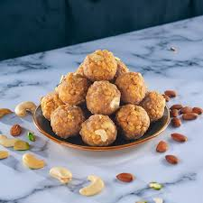

Tirumala Laddu:-

Home
Description:-
- Srivari laddu is a GI-tagged sacred, 300-year-old prasadam.
- It's a dense, golden, aromatic sweet, bursting with the richness of premium ghee,
crunchy cashews, and the aromatic warmth of cardamom, raisins and sugar candy.
- So which makes it a unique flavor unavailable anywhere else in the world.
- It's believed that prasadam hold the sanctity of srivari itself,
It's not just a sweet, It's true Divine Delight.
Ingredients:-
- Besan(Gram Flour): 1 cup
- Sugar: 1 1/2 to 2 cups
- Ghee (Pure Cow): 1/4 to 1/2 cup (for frying and mixing)
- Cashew nuts: 2 tbsp (broken)
- Raisins: 1 tbsp
- Cardamom Powder: 1/2 tsp
- Sugar Candy: 1 tbsp
- Edible Camphor: A tiny pinch
- Water: As needed
Steps:-
- Batter:
- Mix besan with water.
- To create a thick, flowing batter (not too runny).
- Fry Boondi:
- Heat ghee in a pan.
- Using a perforated spoon (boondi ladle).
- pour the batter and fry the boondi until golden brown.
- Remove and drain excess ghee.
- Coarse Grind:
- To achieve the authentic texture.
- Lightly pulse the fried boondi in a mixer, keeping it coarse.
- Sugar Syrup:
- In a separate pan, combine sugar with just enough water to submerge it.
- Heat until a single-string consistency is achieved.
- Add cardamom powder.
- Mix Ingredients:
- Add the fried boondi to the sugar syrup.
- Add along with fried cashews, raisins, sugar candy, and edible camphor.
- Shape Laddus:
- While the mixture is still warm, take small portions.
- And press them tightly into round shapes.
- Allow them to cool and set.